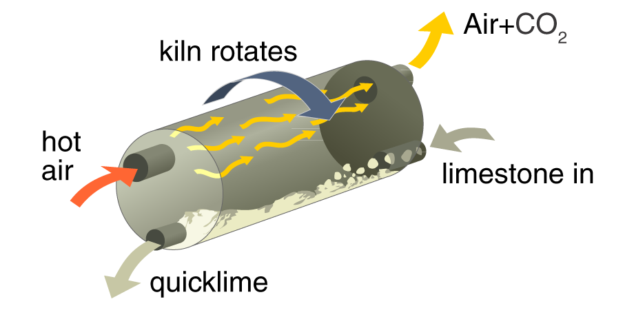

Carbonates of sodium, magnesium, copper and zinc also react with HCl.
Different metal carbonates decompose at different temperatures. Carbonates of sodium and potassium (Group 1) do not decompose in a Bunsen flame. Those of calcium, magnesium and copper do:
CaCO3(s) + HEAT ⇒ CaO(s) + CO2(g)
The equation above shows thermal decomposition of limestone: breaking down limestone with heat.
Thermal decomposition of limestone is usually carried out in a rotary lime kiln. The steady rotation helps the hot air mix with the limestone:

Limestone uses and issues
Limestone is a form of calcium carbonate (CaCO3). It is a rock that can be directly cut and shaped for building. Chalk is a type of limestone.
Limestone is exploded in quarries and cut into blocks for transportation (e.g. to builders, cement factories).
Quarrying is an environmental issue:
Advantages
Disadvantages
Creates jobs, often in deprived rural areas
Dust/noise affect locals and tourist visitors.
Exported to other countries, so it helps the economy.
Quarries are an eyesore; the land they use cannot be farmed.
Quarries can be restored later as green land or reservoirs …
… but this requires time and investment.
Acid rain deteriorates limestone buildings and statues (see above, reaction of calcium carbonate and hydrochloric acid; also Section 9.2).
Thermal decomposition of limestone (see above) is used to manufacture concrete, cement and glass.
Cement = Limestone + Clay (heated in a kiln).
Mortar = Cement + Sand + Water This is used to build typical modern houses (Portland cement mortar).
Concrete = Cement + Sand + Gravel/Aggregate + Water Concrete is very strong; reinforced concrete (poured over steel rods) is stronger still. It resists crushing well.
(Edexcel) Glass = Limestone + Sand + Sodium Carbonate Liquid glass is made by heating these ingredients; this cools as solid glass.
The limestone reaction cycle
The chemicals of the limestone cycle are: limestone, CaCO3(s); quicklime, CaO(s); limewater, Ca(OH)2(aq).